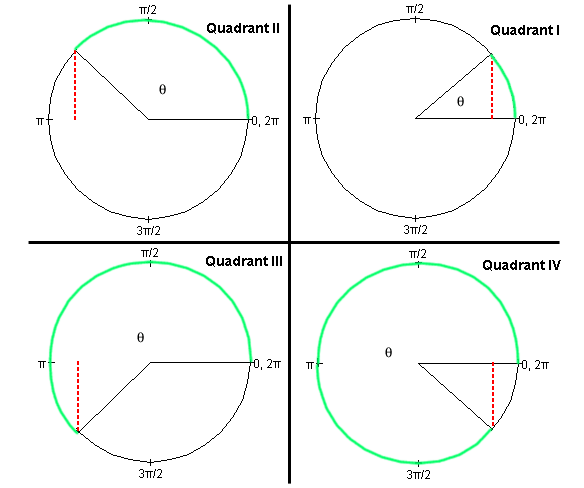
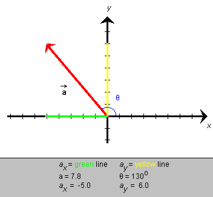

is given in
terms of its scalar components ax and
ay, as illustrated in Figure 1a below. How can
one express ay in terms of a and q, where the angle could be in any quadrant,
e.g., the second quadrant shown in Figure 1a?
is given in
terms of its scalar components ax and
ay, as illustrated in Figure 1a below. How can
one express ay in terms of a and q, where the angle could be in any quadrant,
e.g., the second quadrant shown in Figure 1a?
Sine Function. The following Figure 1 illustrates the definition of the sine function in the first four quadrants.

Figure 1
For each quadrant, an angle q is indicated by means of a green circular arc linking two radii in grey. One of the radii is always horizontal and towards the right. The vertex of the angle is at the center of the circle. Angular measures in radians are indicated along the circle. Remember the correspondence
2p rad = 360o.
Definition of the sine. Let the radius of the circle be equal to 1. Such a circle is called a unit circle. Then the sine of the angle q is equal to the length of the vertical line (dotted red line in Figure 1) dropped onto the horizontal axis through the center of the circle. (In Quadrants II and III, this axis is not shown in Figure 1.)Imagine a pair of x,y axes with their origin at the center of the circle, the x-axis pointing to the right towards the 0 rad point and the y-axis pointing upward towards the p/2 rad point. Then,
sin q = y
where y is the y-coordinate of the point where the variable radius meets the unit circle.
This definition also works for angles greater than 360o or 2p rad and less than 0. For the angles q and q + 2pn rad, where n is any positive or negative integer, the variable radius points in the same direction. Consequently, the sine is the same for these angles. Thus, the sine is a periodic function with a period of 2p rad or 360o.
It is clear from the geometry of the unit circle that the sine function has values between -1 and 1. Check the four basic fixed points:
Check that, for angles in the first quadrant, the more general definition of the sine presented here agrees with the definition of the sine as the ratio of (opposite side)/hypotenuse in a right-angle triangle.
Application of the Sine Function
Suppose a vector is given in
terms of its scalar components ax and
ay, as illustrated in Figure 1a below. How can
one express ay in terms of a and q, where the angle could be in any quadrant,
e.g., the second quadrant shown in Figure 1a?

Figure 1a
If the circle in Figure 1 used in the definition of the sine had not been a unit circle, but a circle of radius r, the definition of the sine could have been stated as
sin q = y / r .
Since, for a given angle q, the coordinate y is proportional to r, the ratio y / r is independent of r and always equal to sin q.
We have the same geometry in Figure 1a as in Figure 1. ay corresponds to y and a to r. Thus,
sin q = ay / a
whence
ay = a sin q.
This equation applies in any quadrant, just as the definition of the sine in terms of y / r applies in any quadrant.